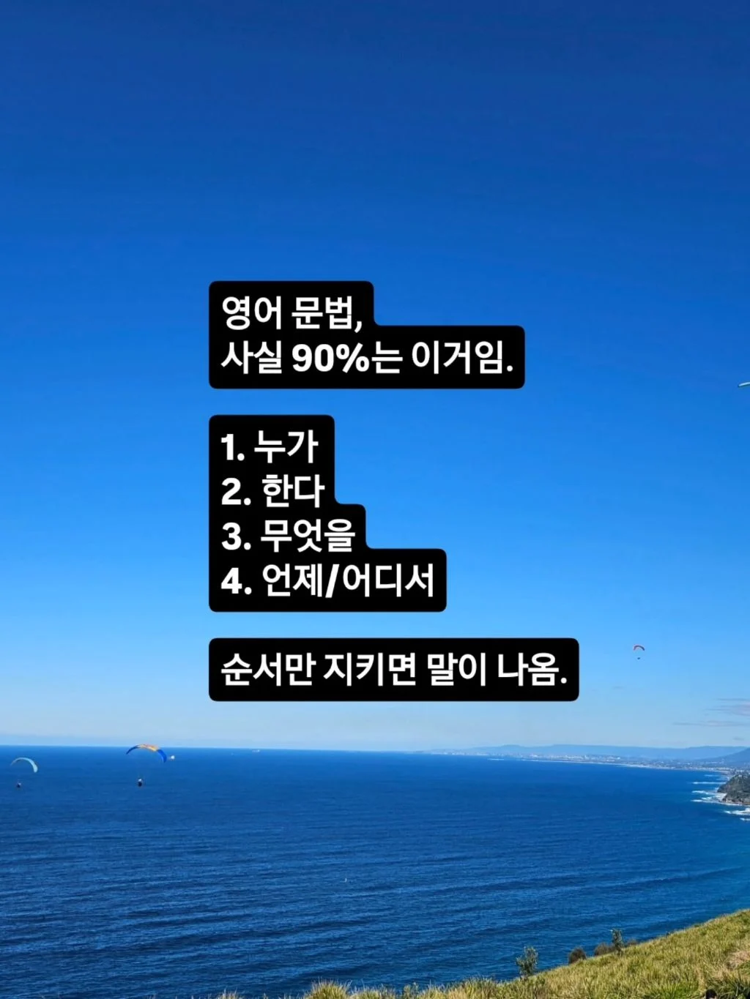
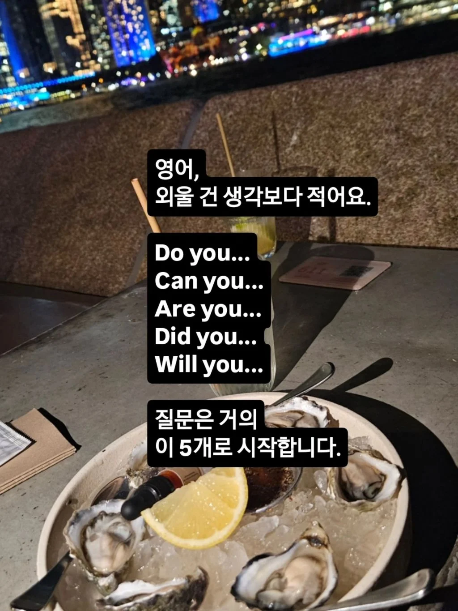
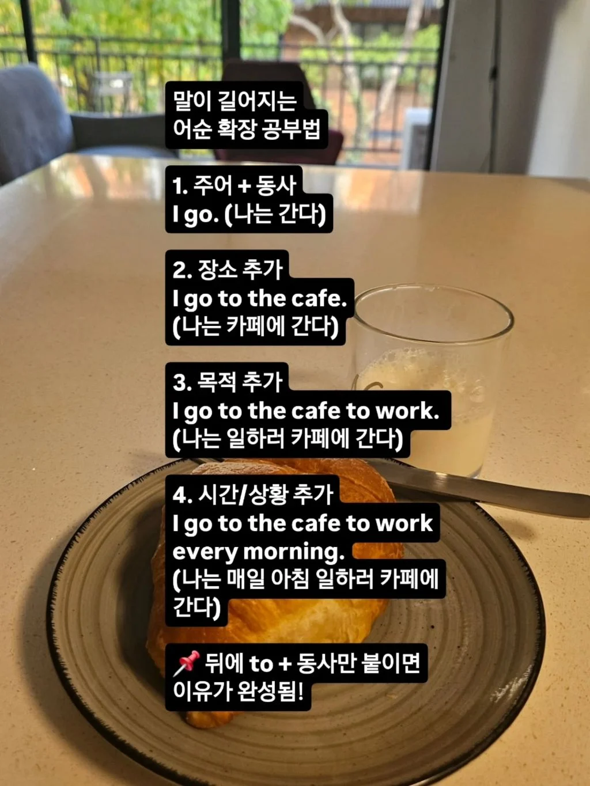
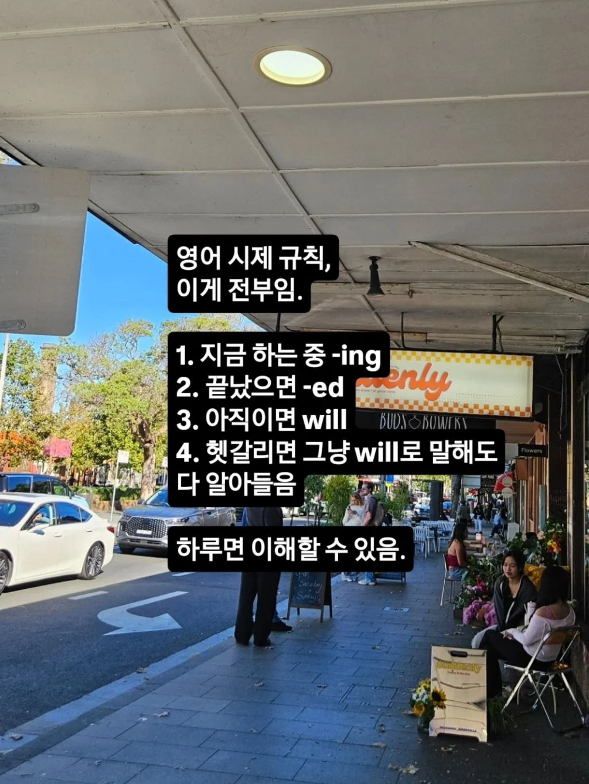
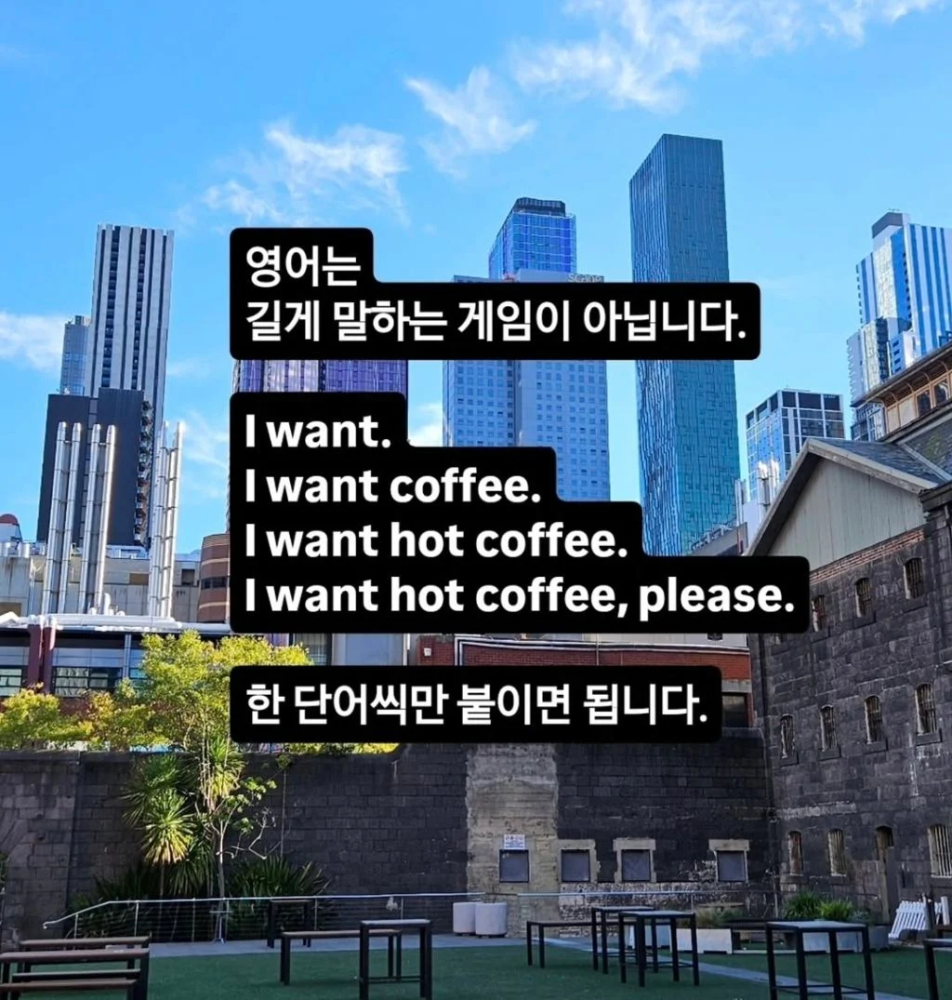
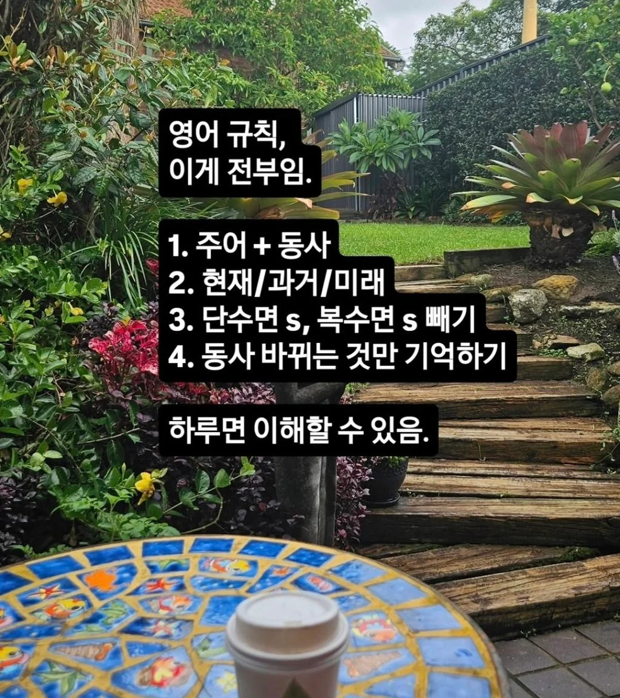
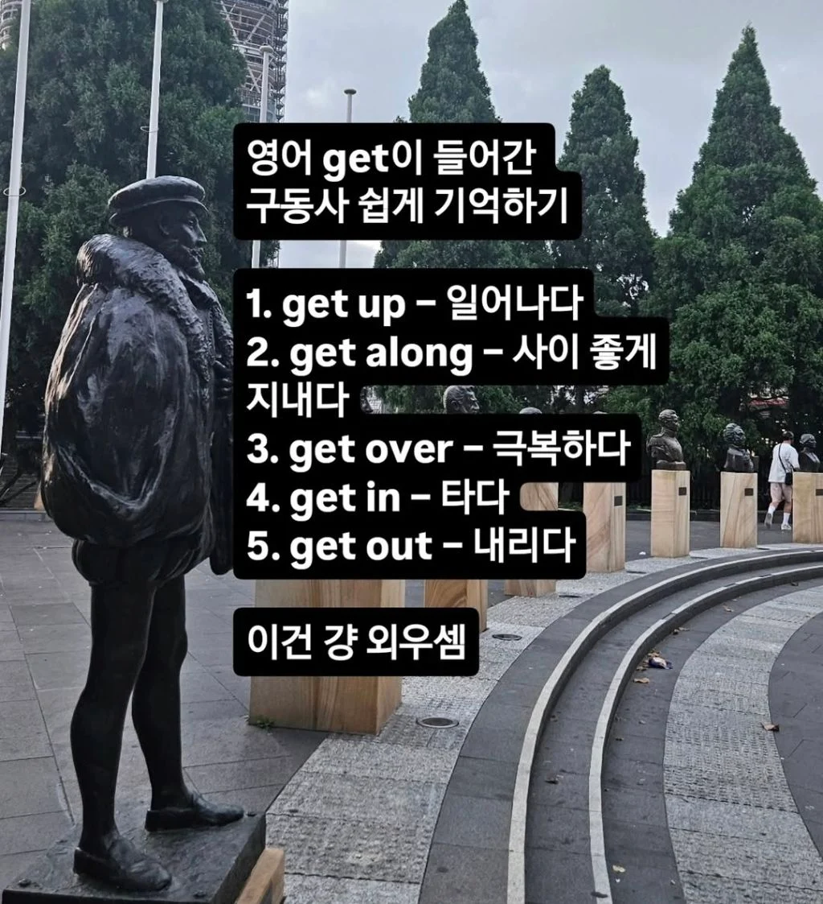
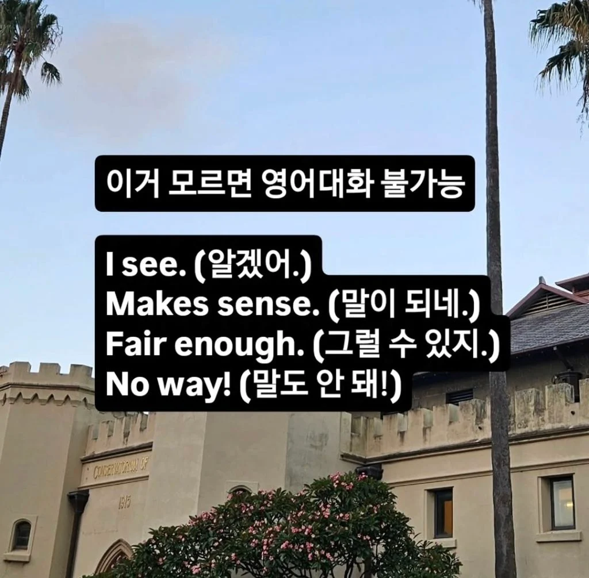

i see!!








i see!!
영어 ㅇㄷ
하 이거때매 5분 마스터 햇다
겠냐고 ㅋㅋ
개 ㅈ같은 언어 구조는 영어쓰는 사람들도 ㅈ같아하는데 뭔소리고… 물론 영어 쓰면서 초등학교 2-3학년 수준 의사소통만 하는 거면 저정도로도 충분함
이거 와드박아서 뭐하게
이렇게 영어하면 유치원생 영어
그냥 생존용 영어 밖에 안되지 머 ㅋㅋㅋ
저렇게 영어할거면 문장으로 말할 필요도 없음
그냥 고 커피 디링킹 오케이?
고 잇 런치
디스 투 디스 원 오케이
이따위로 해도 수준은 어차피 비슷할듯 ㅋㅋ
영어! 이것만 하면 된다 시리즈! 3902번째 시간입니다! ~~~ 이것만 알면 됩니다! 다음시간에 3903번째로 만나요!
ㅋㅋㅋㅋㅋㅋㅋ 엘베해서 스몰토크만 해도 저 규칙이 싹다 없어짐 ㅋㅋㅋㅋㅋㅋ
저건 그냥 ‘저 외국에서 온 관광객이예요, 그러니 감안해주세요‘ 영어임. 저거 한국어로 대치해봐라.그냥 외국인 노동자임.
그게 나쁜건 아닌데, 그게 영어의 전부인것처럼 말하는 저 스토리가 괘씸함
영어 ㅇㄷ